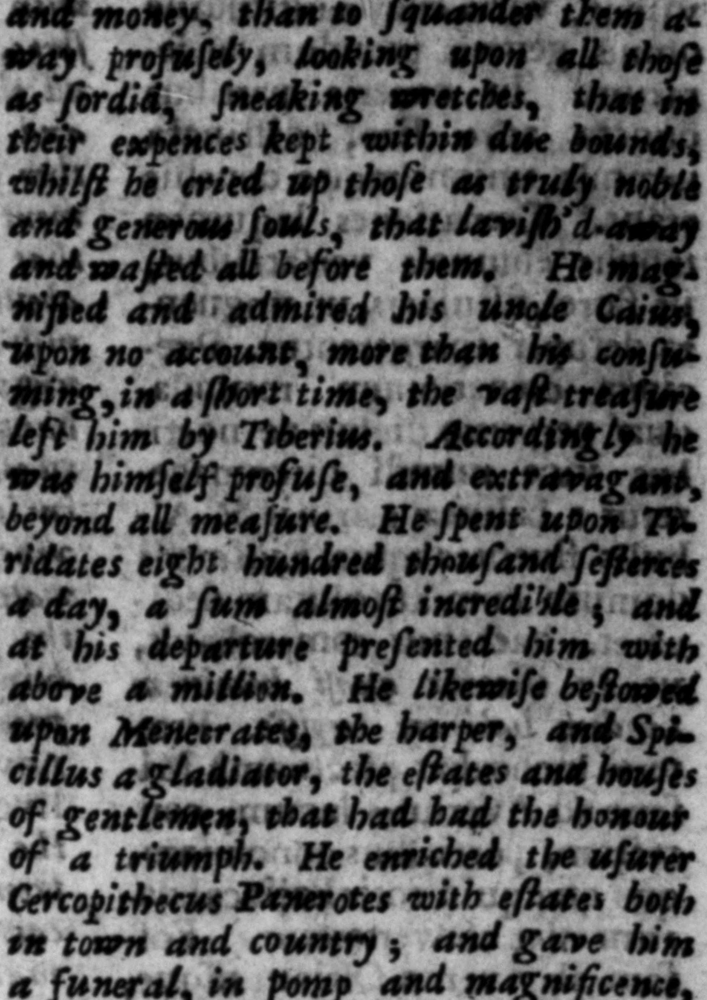

conficertr à - ety 12 a latus _— num imitatus. bal en eum, Ex nonmallis h#neniiiten homi— pudicum, aut — cor. elle: ve rte puram e difimithre vi=X wm og rn ane ee — conceſiifſÞ delicta. 30. Diviarum & fructum 2 alium quam profu onem: d de ele tio impenſurum — nls rei 0 Liadabat mir abaruravunculum Ctjum, nul, Wongs nomine; ce nam == Agens in brevÞ wy Quare nes way i nec ab. Waehdl 1 modum tenuft. In Tiridatem, quod vix credibile Rogen 4 nummuae videatur, © millla Gn erogavit, abeuntique ſuper” H. S. millies concolic, Menecratem cĩtharœdum & Spicill um mfrmillonent triumphalium 9 patrimonits edibufque donavit. Cercopithecum ratorem, & urbanis ruſticiſregio extulit funere. m veltem = beg dringenis ie, f. a! lung. — * rete zurato, purpura e funtbus nexis. Nu carrucis minus mille fect iter traditur, ſoleis mularum arje predits locupletatum, =o: : | ulFand camiſinatis mulioni* arm lata & phalerata cum Mazacum turba, atque curſorum. train of foelnweny. nl Arne, ted upon borſes in very fine trappings. 2 NERO GLAU 3 rhoro 11Hertb : a 1 "of . patienthurf 7 * or undeſi led in any bart of hin. tat ret: prælautos vereque "magnit” ' as er Panerotem fœne"Re K $4. * i bbs 0 ed, not on Man 1% ihe world was dia moſſ men-concealod that vie, 30. Ho knew other uſe' of mls and money. than to Sqnandes then of oof equal 86 that of princes, He wver wor the ſame garment twice. | He 2 ſeſterce⸗ every that came 1 * rhe al. 2229 to fiſh with n wy net, drawn by ſillem cords of the ſeavle: colour. It's ſaid, he never cathy with: — * — — —9 carta attending him with his baggare ; the mules not þ all ſbod with ſel ver 2 their drivers dreffed in ſc arlet chaths 1 uf — and a mumers on their arms, and moun3t. Non
